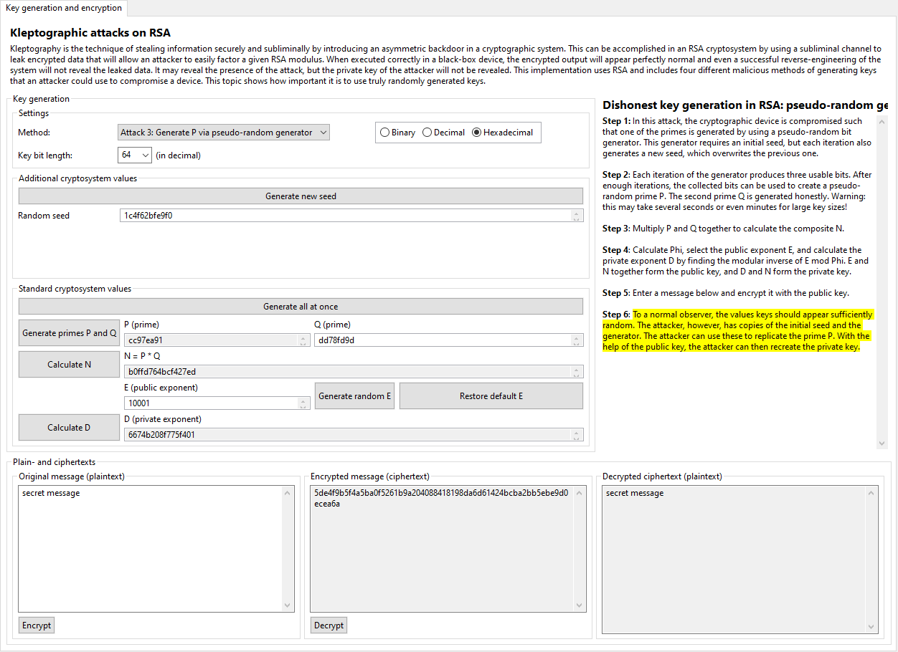

Similar to the pseudo-random function attack, but somewhat more secure, is to use a pseudo-random generator to generate the prime P. The authors of [YY04] suggest in Subsections 11.2.3 and 3.5.2 to use the Blum-Blum-Shub pseudo-random number generator. This generator takes an initial seed and uses a complex scheme to derive both a prime P and a new seed to overwrite the old one. The attacker merely needs a copy of the initial seed and the generator and he or she can then sequentially produce the same output as the cryptographic device.
The security of this method (from the attacker's perspective) is only slightly better than that of the pseudo-random function. Since the seed is overwritten in each step of the process, it would no longer be possible for a successful reverse-engineer to reproduce any of the previous values produced by the device. However, such an engineer could still find the current seed in memory and study the generator algorithm to be able to reproduce all future output. To a casual observer, the device will still appear secure, but to the engineer or any other powerful observer, the device is compromised from the point of investigation onwards.
As mentioned above, this implementation of a pseudo-random generator is based on the Blum-Blum-Shub algorithm. The device is designed to contain a 48-bit number, initialized to a pseudo-random number known to the attacker. This number is used as the seed x in the function (x ^ (2 ^ i) mod n) mod 2 for i = 0 to 50, where in each iteration the most-significant bit is stored and used to build the next seed. The n in this function is the product of two 256-bit pseudo-random primes derived from the current seed, both of which must be congruent to 3 mod 4. After generating this new, 51-bit pseudo-random number, the first three bits are stored in a special bitstream and the remaining 48 bits are saved as a new seed. After going through this process sixteen times, 48 bits will have been stored in the bitstream, which is then used as a seed to generate the prime P. The second prime Q and all other cryptographic values are generated normally. (You are free to chose your own Q or to let the device generate a value for you.)
The user interface should appear similar to that of the honest key generation or the pseudo-random function, with the primary exception of the "Generate new seed" button and the associated random seed field. This seed must be initialized before primes can be generated but thereafter require no additional user interaction. A new seed can be generated to effectively simulate the workflow of an entirely different infected device.
This is no extra simulation of the attacker's perspective for this attack, since the sequence of steps is nearly identical to what the device did itself in the first place: the attacker would use the same seed as input into the same generator function to build the same seed to generate the same prime P. Since the composite N is included in the public key, the second prime Q can be found by dividing N by P, and then the private exponent D can be found with the help of the public exponent E.
Click here to return to the kleptography index or here to continue to the next page (the SETUP attack).
[YY04] A. Young, M. Yung, Malicious Cryptography: Exposing Cryptovirology, John Wiley & Sons, 2004.